Tornado beyond the street.
ASSEMBLED REVIEW COPY
Six moments, assembled.
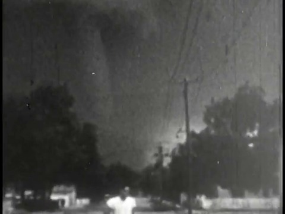
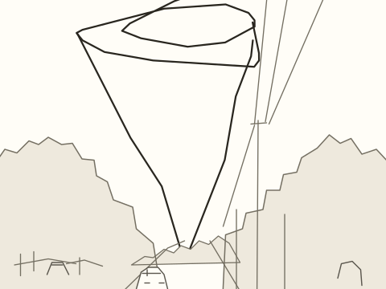
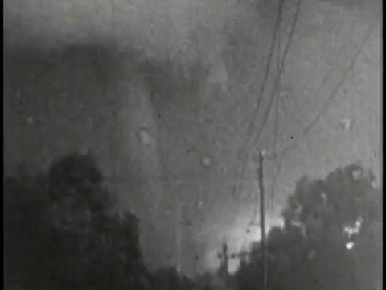
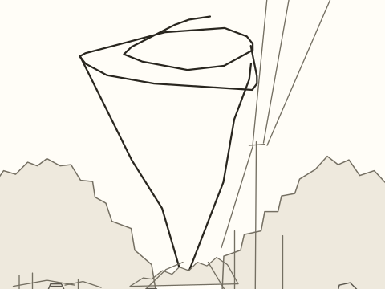
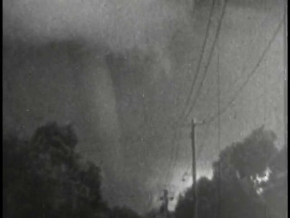
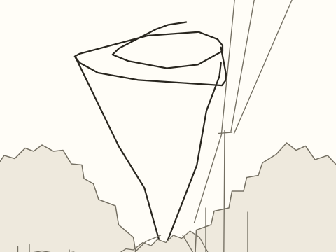
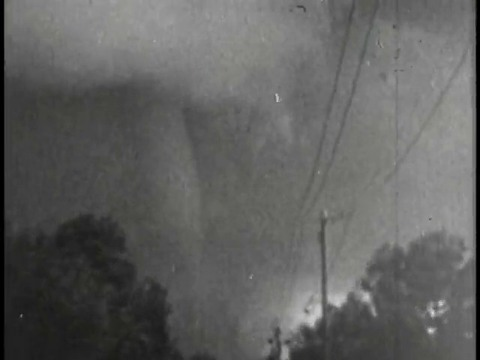
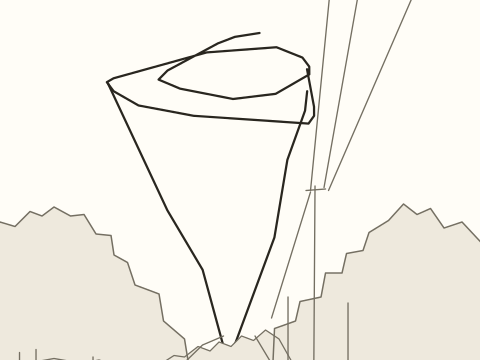
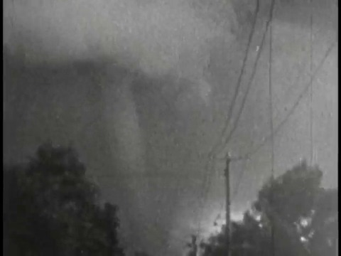
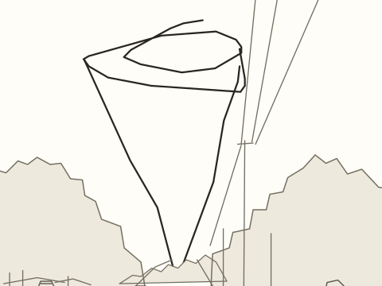
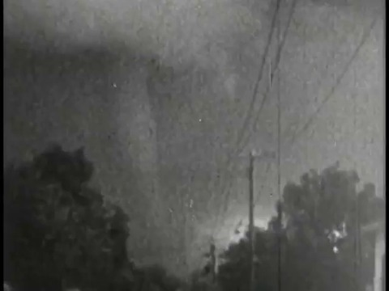
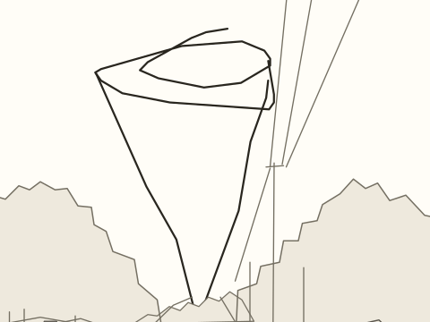
References and review
Quick, Draw! key 6522189199179776. Original three strokes retain their point correspondence through every frame. Quick, Draw! contributors / Google Creative Lab, CC BY 4.0. Street, cars, trees and utility lines drawn once by agent against the archive frame.
Archive: Tornado, clip-relative 0.23357–3.26993 s. Archive rights were not provided in the candidate manifest.
Timeline and source anchors · Checks · Independent still review · Original doodle · SAM audit · Mask provenance


The SAM output switches between sky and a foreground tree despite high model estimates. It is not a valid tornado silhouette, so no numeric mask-fit pass is claimed. Recognition and normal-speed playback approval are pending. No training ran.